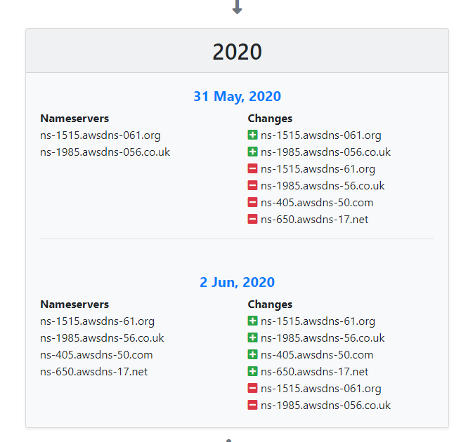
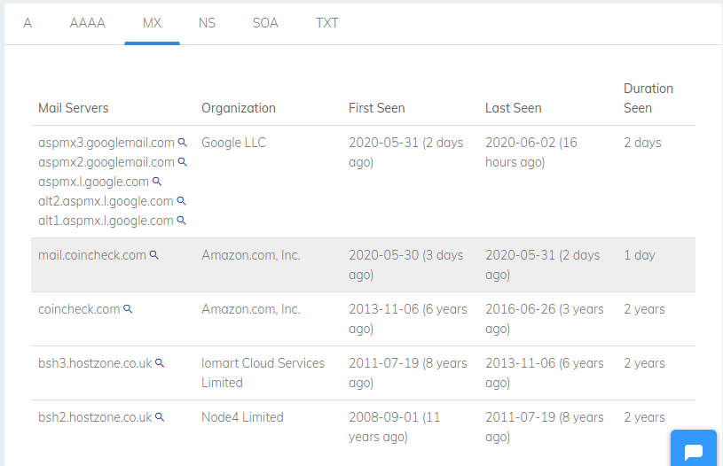
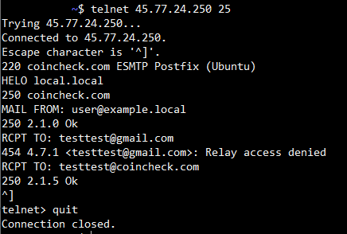

コインチェックのドメインハイジャックの手法を調査した

しゅーとです。
コインチェックは 6月2日 、ドメインレジストラである「お名前.com」の管理アカウントに不正にアクセスされ、ドメイン登録情報が変更されたこと、またそれによって第三者によるメールの不正取得が行われたと発表しました。
プレスリリース(第一報)は以下です。
当社利用のドメイン登録サービスにおける不正アクセスについて（第一報）
攻撃を受けた時刻が 5/31 0:05 で、検知時刻が 6/1 12:00 と攻撃に気付くまでの時間は1日であり、また対応完了まで2日足らずとのことで、検知・対応は非常に迅速だったと思います。
今後第二報で詳細な内容が発表されると思いますが、プレスリリースから攻撃者がどのようにメールの不正取得を行ったのか、インターネット上の情報を用いて調査してみました。
ドメインハイジャックをされている関係上、メール以外にもSSL証明書の不正取得や偽Webサーバによる盗聴などの被害も考えられます。
ただプレスリリースに記載していないことを推測で語るのもよくないため、今回はプレスリリースで触れられているメールの不正取得のみを対象とします。
※プレスリリース、およびインターネット上の情報からの推測であることを念頭においてください。
ドメインハイジャックの原因について (06/04 追記)
6月4日、コインチェックが最終報としてプレスリリースを出しました。(一部引用)
「お名前.com」のドメインやサーバーを管理する「お名前.com Navi」における通信を改ざんできる不具合を利用し、悪意のある第三者が不正にメールアドレスの変更を実施。変更したメールアドレスを使用し当社アカウントのパスワードを変更後、ログインし、ドメイン登録情報を書き換えたことが判明しました。
引用のとおり、攻撃者は「お名前.com Navi」に存在した脆弱性を用いてコインチェックの「お名前.com」アカウントを奪取しドメインハイジャックを行ったようです。
なお「お名前.com Navi」の脆弱性を起因としたドメインハイジャックは、コインチェックだけではなく、bitbank でも発生したことが明らかになっています。
(追記終わり)
不正調査開始
whoisの確認
プレスリリースで、ドメイン登録情報が変更されたと記載があります。whoisにはネームサーバの情報が記載されているため、whois情報を調べます。
$ whois coincheck.com
Domain Name: COINCHECK.COM
Registry Domain ID: 80933535_DOMAIN_COM-VRSN
Registrar WHOIS Server: whois.discount-domain.com
Registrar URL: http://gmo.jp
Updated Date: 2020-06-01T11:52:53Z
Creation Date: 2001-12-10T11:05:42Z
Registry Expiry Date: 2020-12-10T11:05:42Z
Registrar: GMO Internet, Inc. d/b/a Onamae.com
Registrar IANA ID: 49
Registrar Abuse Contact Email: abuse@gmo.jp
Registrar Abuse Contact Phone: +81.337709199
Domain Status: ok https://icann.org/epp#ok
Name Server: NS-1515.AWSDNS-61.ORG
Name Server: NS-1985.AWSDNS-56.CO.UK
Name Server: NS-405.AWSDNS-50.COM
Name Server: NS-650.AWSDNS-17.NET
(snip)
この結果から、いくつかの情報がわかります。
- ドメイン登録情報の最終更新日(Updated Date)
- 2020-06-01T11:52:53Z
- ネームサーバ
- NS-1515.AWSDNS-61.ORG
- NS-1985.AWSDNS-56.CO.UK
- NS-405.AWSDNS-50.COM
- NS-650.AWSDNS-17.NET
ただ、私が調査をした6/3は、攻撃に対する対応が完了した6/2以降であるため、現時点のwhois情報だけでは攻撃者の攻撃手法などを把握することは出来ません。
まずは順に情報を見つけていきましょう。
登録情報が正しいものに修正された時刻
ネームサーバの修正時刻は、第一報に記載があります。
2020年6月1日20時52分頃にドメイン登録情報の修正を実施しており、現時点でお客様の資産に影響はございません。
また、上記のwhoisを確認すると、Updated Dateから確かにその時間であるとわかります。
Updated Date: 2020-06-01T20:52:53Z
登録情報が侵害されたときの情報
Domain history checkerを用いることで、coincheck.comの過去のwhois情報を取得することが出来ました。

細かい時刻はわかりませんが、5/31 にネームサーバが変更されています。
具体的にはAWSのネームサーバが削除され、代わりに正しいネームサーバの名前に似せた不正なネームサーバが登録されていることがわかります。
- ns-1515.awsdns-061[.]org
- ns-1985.awsdns-056[.]co.uk
このドメイン名は、awsdnsの数字部に0が付加されており、AWSとは全く関係ありません。
偽ネームサーバの調査
レコード情報の取得
過去のwhois情報から判明した、2つの偽ネームサーバに対してANYクエリを送信し、coincheck.comのレコード情報を取得しました。
下記は 偽ネームサーバ「awsdns-061」から取得した coincheck.com の偽レコード情報です。
;; QUESTION SECTION:
;coincheck.com. IN ANY
;; ANSWER SECTION:
coincheck.com. 33000 IN SOA ns-1985.awsdns-056[.]co.uk. ns-1515.awsdns-061[.]org. 2020050784 864000 72000 1209600 360000
coincheck.com. 360000 IN NS ns-1985.awsdns-056[.]co.uk.
coincheck.com. 360000 IN NS ns-1515.awsdns-061[.]org.
coincheck.com. 360000 IN NS ns-650.awsdns-017[.]net.
coincheck.com. 300 IN A 54.192.85[.]80
coincheck.com. 60 IN MX 10 aspmx2.googlemail.com.
coincheck.com. 60 IN MX 10 aspmx3.googlemail.com.
coincheck.com. 60 IN MX 5 alt2.aspmx.l.google.com.
coincheck.com. 60 IN MX 1 aspmx.l.google.com.
coincheck.com. 60 IN MX 5 alt1.aspmx.l.google.com.
coincheck.com. 300 IN TXT "facebook-domain-verification=la8geuy2tp70oh91bzf9qv80norcko"
coincheck.com. 300 IN TXT "atlassian-domain-verification=tTCWNrSNtNaqGqVPgZWhLMryhgrJD+iSmpgHI61+3D1Qv/zqWlrXgHJRWYymh+KT"
coincheck.com. 300 IN TXT "google-site-verification=9Vdf1PUnTUg7DQpW_amjVI_CLQAzBs4KpH58W1EBgew"
coincheck.com. 300 IN TXT "v=spf1 +include:servers.mcsv.net +include:amazonses.com +include:_spf.google.com ~all"
coincheck.com. 300 IN TXT "apple-domain-verification=HYRwkB7d1bV30n6U"
coincheck.com. 300 IN TXT "MS=ms23516971"
;; Query time: 252 msec
;; SERVER: 82.221.139[.]210#53(82.221.139[.]210)
;; WHEN: Wed Jun 03 00:37:47 JST 2020
;; MSG SIZE rcvd: 800
基本的には現在正規のネームサーバが返すレコードと同じようにも見受けられますが、NSレコードが偽ネームサーバのドメイン名になっています。
またNSレコードを見ると、awsdns-061、awsdns-056 の他に、 awsdns-017[.]net. というドメイン名も存在することがわかります。
となると他にも正規のネームサーバである awsdns-50 に似せた awsdns-050 があるのではないかとwhoisを調査しましたが、存在しませんでした。
これらのホストは 6/3 現在、以下のAレコードを持っています。
- ns-1985.awsdns-056[.]co.uk
- 172.104.114[.]87
- ns-1515.awsdns-061[.]org
- 82.221.139[.]210
- ns-650.awsdns-017[.]net.
- 45.77.9[.]110
これらは全てホスティング会社のIPであり、もしかしたら攻撃者が用意したVPSかもしれません。
なお、awsdns-056 、 awsdns-017 については名前解決のレスポンスが返ってきませんでした。
whois情報
偽ネームサーバである３ホストはいずれも今年の 5/29 にドメイン名を登録しています。
coincheck.comの正しいネームサーバに似せていることからも、攻撃者が今回の侵害のために登録した可能性が高いです。
awsdns-056
Domain name:
awsdns-056[.]co.uk
(snip)
Relevant dates:
Registered on: 29-May-2020
Expiry date: 29-May-2021
Last updated: 29-May-2020
(snip)
Name servers:
now1.dns.com
now2.dns.com
WHOIS lookup made at 18:53:24 02-Jun-2020
awsdns-061
Domain Name: AWSDNS-061[.]ORG
(snip)
Updated Date: 2020-05-29T14:19:13Z
Creation Date: 2020-05-29T14:19:13Z
(snip)
Name Server: DNS1.SMOOTHDNS.COM
Name Server: DNS2.SMOOTHDNS.COM
(snip)
>>> Last update of WHOIS database: 2020-06-02T17:51:13Z <<<
awsdns-017
Updated Date: 2020-05-29T00:00:00Z
Creation Date: 2020-05-29T19:40:25Z
Registrar Registration Expiration Date: 2021-05-29T00:00:00Z
(snip)
Name Server: now1.dns.com
Name Server: now2.dns.com
(snip)
>>> Last update of WHOIS database: 2020-05-29T00:00:00Z <<<
メールの不正取得とMXレコードの調査
プレスリリースでは以下の文言があります。
本事象により、2020年5月31日～6月1日の期間にお客様からお問い合わせを頂いた一部のメールを第三者が不正に取得できる状態になっていたことが判明いたしました。
上記から、MXレコードが別ホストに向けられている可能性を考えます。
現在の正しいMXレコードは以下です。
coincheck.com. 86400 IN MX 1 aspmx.l.google.com.
coincheck.com. 86400 IN MX 10 aspmx2.googlemail.com.
coincheck.com. 86400 IN MX 10 aspmx3.googlemail.com.
coincheck.com. 86400 IN MX 5 alt1.aspmx.l.google.com.
coincheck.com. 86400 IN MX 5 alt2.aspmx.l.google.com.
これと awsdns-061 からの偽応答を比べてみたところ、TTLを除いてどちらも同じ値でした。
ただこの結果だけで、MXが侵害されていないと考えてはいけません。
侵害発生時は偽のMXレコードになっていた可能性があり、現在の偽応答は既に攻撃者によって正しいMXレコードであるかのように隠蔽されているかもしれないためです。
ここで、過去の coincheck.com のDNSレコードを調べることにします。
SecurityTrailsという過去のDNSレコードを検索できるサービスで検索したところ、以下の奇妙なMXレコードが存在していることがわかりました。
- mail.coincheck[.]com

名前が存在する期間も 5/30 - 31 と、侵害された期間と一致しています。
コインチェックは過去のDNSレコードを見る限り G Suiteのメールサービスを使っているため、5/30 に突然 G Suite ではない MXレコードが設定されるのは非常に怪しいです。
これは攻撃者が不正なネームサーバに設定したMXレコードと考えるのが自然でしょう。
偽メールサーバの調査
このホストに関する情報を調べます。偽ネームサーバに対してmail.coincheck[.]comのAレコードを問い合わせました。
;; QUESTION SECTION:
;mail.coincheck[.]com. IN A
;; ANSWER SECTION:
mail.coincheck[.]com. 300 IN A 45.77.24[.]250
;; AUTHORITY SECTION:
coincheck.com. 360000 IN NS ns-650.awsdns-017[.]net.
coincheck.com. 360000 IN NS ns-1985.awsdns-056[.]co.uk.
coincheck.com. 360000 IN NS ns-1515.awsdns-061[.]org.
;; Query time: 256 msec
;; SERVER: 82.221.139[.]210#53(82.221.139[.]210)
;; WHEN: Wed Jun 03 02:00:48 JST 2020
;; MSG SIZE rcvd: 200
予想通り、正規のネームサーバには存在しないAレコードが返ってきました。(AAAAレコードはなかった)
このドメイン名は 45.77.24[.]250 という不審なホストと紐付いており、このホストで偽メールサーバが待ち受けていたと考えられます。
このホストは Choopa LLC の子会社 Vultr というホスティング会社のVPSで、whois の結果から東京リージョンのマシンと思われます。
なお現在も偽メールサーバは待ち受けていました。
$ telnet 45.77.24[.]250 25
Trying 45.77.24[.]250...
Connected to 45.77.24[.]250.
Escape character is '^]'.
SMTPリクエストを送ってみます。

自身をcoincheck.comと偽っているようです。
RCPT TOコマンドの動作から、宛先メールアドレスがcoincheck.comのときにのみ受信するようにしているみたいです。
受信したメールを本来のcoincheck.comのメールサーバに転送しているかはここからは判断できませんでした。
調査結果
これまでの調査から、あくまで推測ではあるものの、
攻撃者は以下のステップでメールの不正取得を行ったと考えます。
-
「お名前.com Navi」の脆弱性を利用し、coincheck.comを管理している「お名前.com」のアカウントを奪取
-
正規のネームサーバに似せた不正なドメイン名を取得する
-
不正なドメイン名に紐付けたホストにてDNSサーバを設定・起動する
-
お名前.comの設定画面で coincheck.com のネームサーバを偽ネームサーバに変更する
この時点でドメインハイジャックに成功。
この状態でコインチェック利用者がコインチェックにメールを送信するとき、
以下のステップで攻撃者にメールが送信される*。 -
利用者がメールを送信する
MTAがコインチェックのメールサーバをキャッシュサーバに問い合わせる -
MTAが利用しているキャッシュサーバが名前解決をする
-
不正なドメイン名に委任されているため、攻撃者の用意した偽ネームサーバが応答する
-
偽ネームサーバが、攻撃者が用意した偽メールサーバの情報を応答する
-
MTAが偽メールサーバに対してメールを送信する
-
偽メールサーバが利用者からコインチェックへのメールを受信する
* 不正なネームサーバに誘導される条件として、利用者が使用しているDNSキャッシュサーバがcoincheck.comのキャッシュを持っていないこと
現在の正しいNSレコードのTTLは 172800 、つまり48時間に設定されていますが、当時も同様のTTLであった場合、ドメイン登録情報が改変されて修正されるまでに40時間ほど経過しているため、多くのキャッシュサーバは正しいネームサーバのキャッシュが切れ、偽ネームサーバに誘導された可能性があります。
影響範囲について
今回はDNSのネームサーバを偽ホストに不正に変更されることでドメインハイジャックが成功し、メールの不正取得が行われました。
6/1 20:52 にドメイン登録情報が修正されたことで問題から復旧したと考えたいところですが、場合によってはキャッシュサーバによるキャッシュによる影響が今後も続く可能性があります。
時系列にしてみましょう。
-
05/31 00:05 ドメイン登録情報が不正なネームサーバに書き換えられる
～この期間にキャッシュがない状態で名前解決した場合、不正応答をキャッシュする～
(6/3時点で、偽ネームサーバが返すNSレコードのTTLは360000->100時間) -
06/01 20:52 ドメイン登録情報が正しいネームサーバに修正される
-
06/04 04:05 不正なキャッシュがクリアされる最速の時間( 1. の直後から100時間経過)
-
06/06 00:52 不正なキャッシュがクリアされる最遅の時間( 2. の直前から100時間経過)
このように、偽ネームサーバが応答したNSのTTLが360000の場合、最大で 4. の 6/6 まで攻撃の影響が続いている可能性があります。
コインチェックが全世界のキャッシュサーバのキャッシュをクリアすることは原理上不可能であるため、心配な利用者は coincheck.com の NS が攻撃者の用意した以下のドメイン名ではないことを確認した方がいいと思います。
- ns-650.awsdns-017[.]net.
- ns-1985.awsdns-056[.]co.uk.
- ns-1515.awsdns-061[.]org.
IoC
Domain name
- ns-650.awsdns-017[.]net.
- ns-1985.awsdns-056[.]co.uk.
- ns-1515.awsdns-061[.]org.
IP Address
※下記IPアドレスは必ずしも不正ではない可能性があります。
- 172.104.114[.]87
- 82.221.139[.]210
- 45.77.9[.]110
- 45.77.24[.]250
更新履歴
-
2020年6月3日 15時 新規作成
-
2020年6月4日 5時 「お名前.com」 のプレスリリースを受けて内容を追記
-
2020年6月4日 20時 コインチェックの最終報のプレスリリースを受けて内容を追記・変更